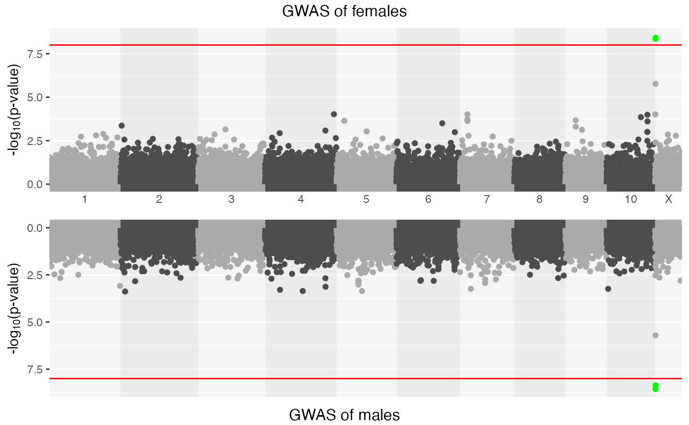
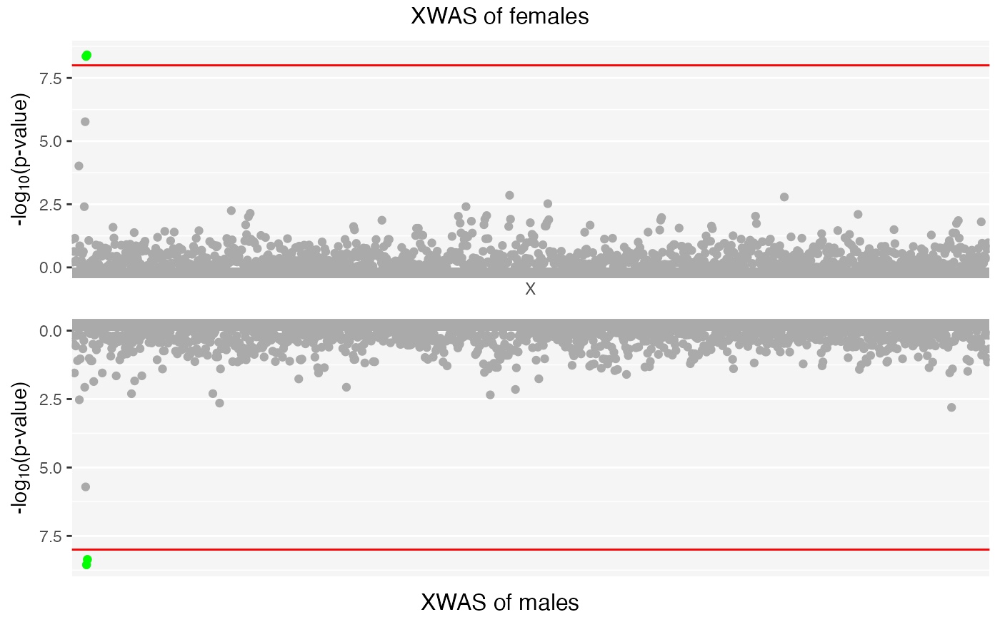
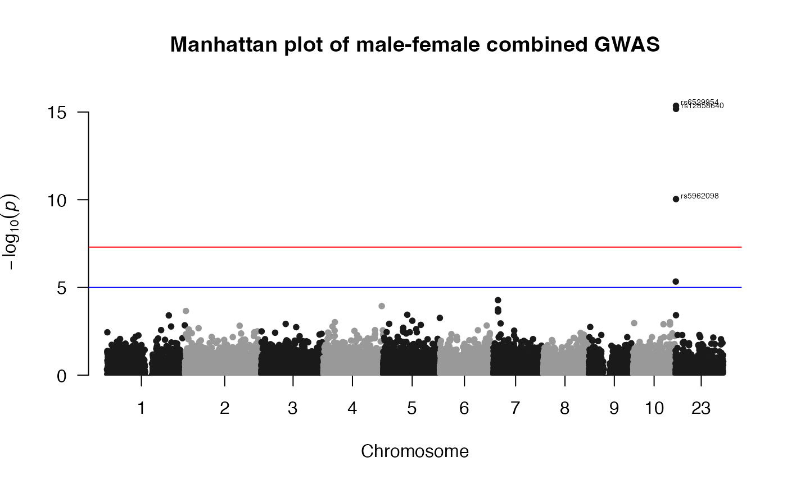
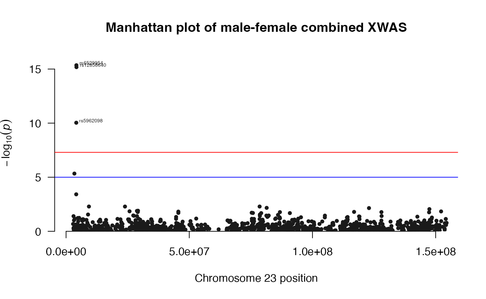
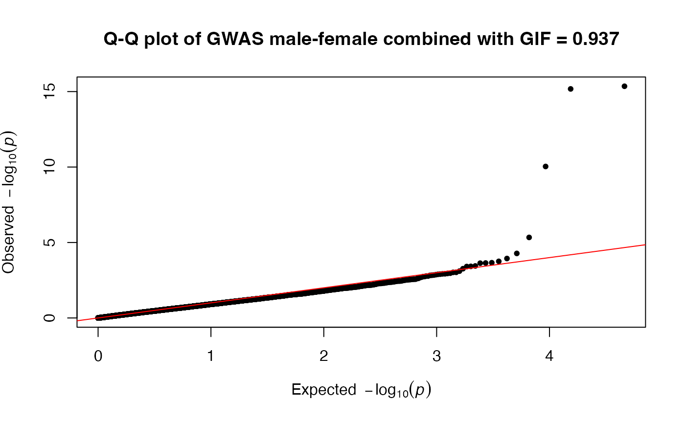
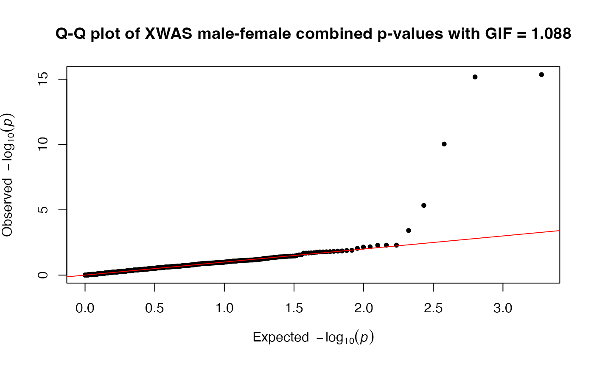
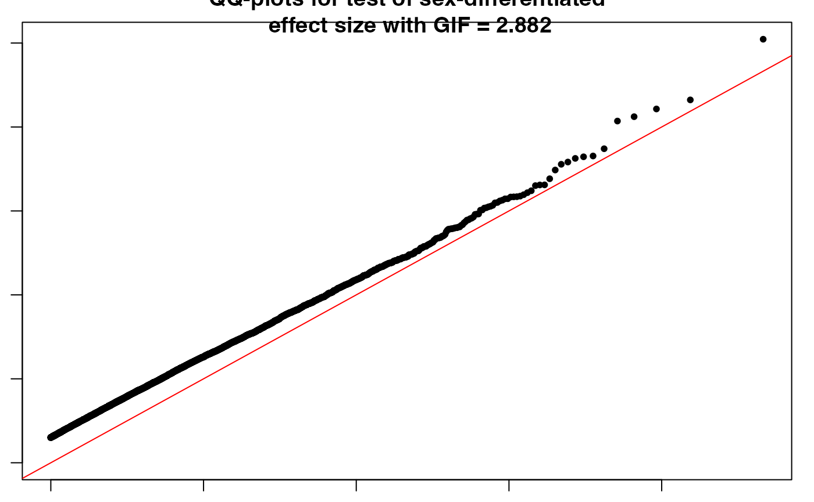

Running GWAS, XWAS and Sex-differential tests Using GXwasR
Banabithi Bose
University of Colorado Anschutz Medical;Northwestern Universitybanabithi.bose@gmail.com
16 October 2025
Source:vignettes/gwas_models.Rmd
gwas_models.RmdIntroduction
This document contains an example of running a GWAS with XWAS model and Sex-differential tests.
Users must perform pre-imputation and post-imputation quality control (QC) on genotype dataset and then proceed with this tutorial in actual scenario. Please follow the detailed QC-ed steps provided in: GXwasR_Preimputation and GXwasR_Postimputation.
Example Datasets
The PLINK bed, bim, and fam files are the three mandatory files representing a genotype dataset to run this tutorial. To know about these file extensions, please check https://www.cog-genomics.org/plink/1.9/formats.
GXwasR_example:
GXwasR_example.bed
GXwasR_example.bim
GXwasR_example.fam
These plink files contain genotypes for 276 individuals (males and females) simulated from 1000Genome from European decent with 26515 variants across twelve chromosomes (1-10,23,24). This dataset contains 125 males, 151 females, 108 cases and 168 controls. We will utilize this set of plink files as proxy of pre-imputated genotype data.
Loading the GXwasR library
## Call some libraries
library(GXwasR)
#>
#> GXwasR: Genome-wide and x-chromosome wide association analyses applying
#> best practices of quality control over genetic data
#> Version 0.99.0 () installed
#> Author: c(
#> person(given = "Banabithi",
#> family = "Bose",
#> role = c("cre", "aut"),
#> email = "banabithi.bose@gmail.com",
#> comment = c(ORCID = "0000-0003-0842-8768"))
#> )
#> Maintainer: Banabithi Bose <banabithi.bose@gmail.com>
#> Tutorial: https://github.com
#> Use citation("GXwasR") to know how to cite this work.
library(printr)
#> Registered S3 method overwritten by 'printr':
#> method from
#> knit_print.data.frame rmarkdown
library(rmarkdown)
#>
#> Attaching package: 'rmarkdown'
#> The following objects are masked from 'package:BiocStyle':
#>
#> html_document, md_document, pdf_documentLearn about all the GXwasR functions
browseVignettes("GXwasR")Example Dataset Summary
Dataset: GXwasR_example
DataDir <- GXwasR:::GXwasR_data()
ResultDir <- tempdir()
finput <- "GXwasR_example"
x <- PlinkSummary(DataDir, ResultDir, finput)
#> ℹ Dataset: GXwasR_example
#> ℹ Number of missing phenotypes: 0
#> ℹ Number of males: 125
#> ℹ Number of females: 151
#> ℹ This is case-control data
#> ℹ Number of cases: 108
#> ℹ Number of controls: 168
#> ℹ Number of cases in males: 53
#> ℹ Number of controls in males: 72
#> ℹ Number of cases in females: 55
#> ℹ Number of controls in females: 96
#> ℹ Number of chromosomes: 12
#> - Chr: 1
#> - Chr: 2
#> - Chr: 3
#> - Chr: 4
#> - Chr: 5
#> - Chr: 6
#> - Chr: 7
#> - Chr: 8
#> - Chr: 9
#> - Chr: 10
#> - Chr: 23
#> - Chr: 24
#> ℹ Total number of SNPs: 26527
#> ℹ Total number of samples: 276Sex-combined and sex-stratified GWAS with XWAS
Function: GXwas()
help(GXwas, package = GXwasR)| GXwas | R Documentation |
GXwas: Running genome-wide association study (GWAS) and X-chromosome-wide association study (XWAS) models.
Description
This function runs GWAS models in autosomes with several alternative XWAS models. Models such as "FMcombx01","FMcombx02",and "FMstratified" can be applied to both binary and quantitative traits, while "GWAcxci" can only be applied to a binary trait.
For binary and quantitative features, this function uses logistic and linear regression, allowing for multiple covariates and the interactions with those covariates in a multiple-regression approach. These models are all run using the additive effects of SNPs, and each additional minor allele's influence is represented by the direction of the regression coefficient.
This function attempts to identify the multi-collinearity among predictors by displaying NA for the test statistic and a p-value for all terms in the model. The more terms you add, the more likely you are to run into issues.
For details about the different XWAS model, please follow the associated publication.
Usage
GXwas(
DataDir,
ResultDir,
finput,
trait = c("binary", "quantitative"),
standard_beta = TRUE,
xmodel = c("FMcombx01", "FMcombx02", "FMstratified", "GWAScxci"),
sex = FALSE,
xsex = FALSE,
covarfile = NULL,
interaction = FALSE,
covartest = c("ALL"),
Inphenocov = c("ALL"),
combtest = c("fisher.method", "fisher.method.perm", "stouffer.method"),
MF.zero.sub = 1e-05,
B = 10000,
MF.mc.cores = 1,
MF.na.rm = FALSE,
MF.p.corr = "none",
plot.jpeg = FALSE,
plotname = "GXwas.plot",
snp_pval = 1e-08,
annotateTopSnp = FALSE,
suggestiveline = 5,
genomewideline = 7.3,
ncores = 0
)Arguments
DataDir |
Character string for the file path of the input PLINK binary files. |
ResultDir |
Character string for the folder path where the outputs will be saved. |
finput |
Character string, specifying the prefix of the input PLINK binary files with both male and female samples.
This file needs to be in Note: Case/control phenotypes are expected to be encoded as 1=unaffected (control), 2=affected (case); 0 is accepted as an alternate missing value encoding. The missing case/control or quantitative phenotypes are expected to be encoded as 'NA'/'nan' (any capitalization) or -9. |
trait |
Boolean value, 'binary' or 'quantitative' for the phenotype i.e. the trait. |
standard_beta |
Boolean value, |
xmodel |
Models "FMcombx01","FMcombx02",and "FMstratified" can be chosen for both binary and quantitative traits while "GWAcxci" can only apply to the binary trait. These models take care of the X-chromosomal marker. Three female genotypes are coded by 0, 1, and 2 in FM01 and FM02. The two genotypes of males that follow the X-chromosome inactivation (XCI) pattern as random (XCI-R) in the FM01 model are coded by 0 and 1, while the two genotypes that follow the XCI is escaped (XCI-E) in the FM02 model are coded by 0 and 1. To reflect the dose compensation connection between the sexes, FM02 treats men as homozygous females. In the "FMstratified" associations are tested separately for males and females, and then the combined p values are computed the Fisher's method, Fisher's method with permutation, or Stouffer's method(1,3-7]. An X-chromosome inactivation (XCI) pattern, or coding technique for X-chromosomal genotypes between sexes, is not required for the XCGA. By simultaneously accounting for four distinct XCI patterns, namely XCI-R, XCI-E, XCI-SN (XCI fully toward normal allele), and XCI-SR (XCI fully toward risk allele), this model may maintain a respectably high power (Su et al. 2022). Note: |
sex |
Boolean value, The default is FALSE. |
xsex |
Boolean value, |
covarfile |
Character string for the full name of the covariate file in .txt format. This file should be placed in Note about the covariate file: The first column of this file should be |
interaction |
Boolean value, |
covartest |
Vector value with |
Inphenocov |
Vector of integer values starting from 1 to extract the terms which user wants from the above model:
Note: This feature is not valid for the XCGA model for the XWAS part. |
combtest |
Character vector specifying method for combining p-values after stratified GWAS/XWAS models.
Choices are “stouffer.method”, "fisher.method" and "fisher.method.perm". For fisher.method the function for combining
p-values uses a statistic, For fisher.method.perm, using p-values from stratified tests, the summary statistic for combining p-values is For stouffer.method ,the function applies Stouffer’s method (Stouffer et al. 1949) to the p-values assuming that the p-values to be combined are
independent. Letting p1, p2, . . . , pk denote the individual (one- or two-sided) p-values of the k hypothesis tests to be
combined, the test statistic is then computed with Note that only p-values between 0 and 1 are allowed to be passed to these methods. Note: Though this parameter is enabled for both autosome GWAS and XWAS, the combining pvalue after sex-stratified test is recommended to ChrX only. |
MF.zero.sub |
Small numeric value for substituting p-values of 0 in in stratified GWAS with FM01comb and FM02comb XWAS models. The default is 0.00001. As log(0) results in Inf this replaces p-values of 0 by default with a small float. |
B |
Integer value specifying the number of permutation in case of using fisher.method.perm method in stratified GWAS with FM01comb and FM02comb XWAS models. The default is 10000. |
MF.mc.cores |
Number of cores used for fisher.method.perm in stratified GWAS with FM01comb and FM02comb XWAS models. |
MF.na.rm |
Boolean value, |
MF.p.corr |
Character vector specifying method for correcting the summary p-values for FMfcomb and FMscomb models. Choices are "bonferroni", "BH" and "none" for Bonferroni, Benjamini-Hochberg and none, respectively. The default is "none". |
plot.jpeg |
Boolean value, |
plotname |
A character string specifying the prefix of the file for plots. This file will be saved in DataDir. The default is "GXwas.plot". |
snp_pval |
Numeric value as p-value threshold for annotation. SNPs below this p-value will be annotated on the plot. The default is 1e-08. |
annotateTopSnp |
Boolean value, |
suggestiveline |
The default is 5 (for p-value 1e-05). |
genomewideline |
The default is 7.3 (for p-value 5e-08). |
ncores |
Integer value, specifying the number of cores for parallel processing. The default is 0 (no parallel computation). |
Value
A dataframe with GWAS (with XWAS for X-chromosomal variants) along with Manhattan and Q-Q plots. In the case of the stratified test, the return is a list containing three dataframes, namely, FWAS, MWAS, and MFWAS with association results in only female, only male, and both cohorts, respectively. This will be accompanied by Miami and Q-Q plots. The individual manhattan and Q-Q-plots for stratified tests prefixed with xmodel type will be in the DataDir.
Author(s)
Banabithi Bose
References
Cinar O, Viechtbauer W (2022).
“The poolr package for combining independent and dependent p values.”
Journal of Statistical Software, 101(1), 1–42.
doi:10.18637/jss.v101.i01.
Fisher RA (1925).
Statistical Methods for Research Workers.
Oliver and Boyd, Edinburgh.
Moreau Y, others (2003).
“Comparison and meta-analysis of microarray data: from the bench to the computer desk.”
Trends in Genetics, 19(10), 570–577.
Purcell S, Neale B, Todd-Brown K, Thomas L, Ferreira MAR, Bender D, Maller J, Sklar P, de Bakker PIW, Daly MJ, others (2007).
“PLINK: A Tool Set for Whole-Genome Association and Population-Based Linkage Analyses.”
The American Journal of Human Genetics, 81(3), 559–575.
doi:10.1086/519795.
Rhodes DR (2002).
“Meta-analysis of microarrays: interstudy validation of gene expression profiles reveals pathway dysregulation in prostate cancer.”
Cancer Research, 62(15), 4427–4433.
Stouffer SA, Suchman EA, DeVinney LC, Star SA, Williams RM (1949).
The American Soldier: Adjustment During Army Life, volume 1.
Princeton University Press, Princeton, NJ.
Su Y, Hu J, Yin P, Jiang H, Chen S, Dai M, Chen Z, Wang P (2022).
“XCMAX4: A Robust X Chromosomal Genetic Association Test Accounting for Covariates.”
Genes (Basel), 13(5), 847.
doi:10.3390/genes13050847, http://www.ncbi.nlm.nih.gov/pubmed/35627231.
Examples
DataDir <- GXwasR:::GXwasR_data()
ResultDir <- tempdir()
finput <- "GXwasR_example"
standard_beta <- TRUE
xsex <- FALSE
sex <- TRUE
Inphenocov <- NULL
covartest <- NULL
interaction <- FALSE
MF.na.rm <- FALSE
B <- 10000
MF.zero.sub <- 0.00001
trait <- "binary"
xmodel <- "FMcombx02"
combtest <- "fisher.method"
snp_pval <- 1e-08
covarfile <- NULL
ncores <- 0
MF.mc.cores <- 1
ResultGXwas <- GXwas(
DataDir = DataDir, ResultDir = ResultDir,
finput = finput, xmodel = xmodel, trait = trait, covarfile = covarfile,
sex = sex, xsex = xsex, combtest = combtest, MF.p.corr = "none",
snp_pval = snp_pval, plot.jpeg = TRUE, suggestiveline = 5, genomewideline = 7.3,
MF.mc.cores = 1, ncores = ncores
)Running GXwas
## Running
DataDir <- GXwasR:::GXwasR_data()
ResultDir <- tempdir()
finput <- "GXwasR_example"
standard_beta <- TRUE
xsex <- FALSE
sex <- TRUE
Inphenocov <- NULL
covartest <- NULL
interaction <- FALSE
MF.na.rm <- FALSE
B <- 10000
MF.zero.sub <- 0.00001
trait <- "binary"
xmodel <- "FMstratified"
combtest <- "fisher.method"
snp_pval <- 1e-08
covarfile <- NULL
ncores <- 2
plot.jpeg <- FALSE
MF.mc.cores <- 2
genomewideline <- 7.3
suggestiveline <- 5
plotname <- "GXwas.plot"
annotateTopSnp <- FALSE
MF.na.rm <- FALSE
B <- 10000
MF.zero.sub <- 0.00001
MF.p.corr <- "none"
plotname <- "GXwas.plot"
ResultGXwas <- GXwas(DataDir = DataDir, ResultDir = ResultDir, finput = finput, xmodel = xmodel, trait = trait, covarfile = covarfile, sex = sex, xsex = xsex, combtest = combtest, MF.p.corr = "none", snp_pval = snp_pval, plot.jpeg = plot.jpeg, suggestiveline = 5, genomewideline = 7.3, MF.mc.cores = 1, ncores = ncores)
#> • Running FMstratified model
#> Using PLINK v1.9.0-b.7.7 64-bit (22 Oct 2024)
#> • Stratified test is running for females
#> • Stratified test is running for males
#> • Parallel computation is in progress --------->
#> • Parallel computation is in progress --------->
#> ℹ Plots are initiated.
#> ℹ Saving plot to /var/folders/d6/gtwl3_017sj4pp14fbfcbqjh0000gp/T//RtmpJcjBtr/Stratified_GWAS.png
#> ℹ Saving plot to
#> /var/folders/d6/gtwl3_017sj4pp14fbfcbqjh0000gp/T//RtmpJcjBtr/Stratified_XWAS.png




#> Three data frames have been created and saved:
#> • CombinedWAS
#> • MaleWAS
#> • FemaleWAS
#> ℹ You can find them in the directory: /var/folders/d6/gtwl3_017sj4pp14fbfcbqjh0000gp/T//RtmpJcjBtr
# Outputs
knitr::kable(ResultGXwas$CombinedWAS[1:5, ], caption = "Dataframe containing the result of stratified model")| SNP | CHR | BP | P |
|---|---|---|---|
| rs10000405 | 4 | 47716881 | 0.9768464 |
| rs10000452 | 4 | 63234460 | 0.6969710 |
| rs10000465 | 4 | 120835814 | 0.5378310 |
| rs10000605 | 4 | 13875675 | 0.7221672 |
| rs10000675 | 4 | 121520624 | 0.8246220 |
knitr::kable(ResultGXwas$MaleWAS[1:5, ], caption = "Stratified GWAS result with male cohort.")| CHR | SNP | BP | A1 | TEST | NMISS | BETA | SE | L95 | U95 | STAT | P |
|---|---|---|---|---|---|---|---|---|---|---|---|
| 1 | rs143773730 | 73841 | T | ADD | 125 | -0.0789 | 0.2643 | -0.5968 | 0.4390 | -0.2986 | 0.76530 |
| 1 | rs147281566 | 775125 | T | ADD | 125 | -0.3959 | 1.2380 | -2.8230 | 2.0310 | -0.3197 | 0.74920 |
| 1 | rs35854196 | 863863 | A | ADD | 125 | 1.0500 | 0.8858 | -0.6864 | 2.7860 | 1.1850 | 0.23600 |
| 1 | rs12041521 | 1109154 | A | ADD | 125 | -0.4451 | 0.3387 | -1.1090 | 0.2188 | -1.3140 | 0.18890 |
| 1 | rs148527527 | 1127860 | G | ADD | 125 | 1.6770 | 0.6864 | 0.3317 | 3.0220 | 2.4430 | 0.01456 |
knitr::kable(ResultGXwas$FemaleWAS[1:5, ], caption = "Stratified GWAS result with female cohort.")| CHR | SNP | BP | A1 | TEST | NMISS | BETA | SE | L95 | U95 | STAT | P |
|---|---|---|---|---|---|---|---|---|---|---|---|
| 1 | rs143773730 | 73841 | T | ADD | 151 | 0.3459 | 0.2818 | -0.2064 | 0.89820 | 1.2270 | 0.21970 |
| 1 | rs147281566 | 775125 | T | ADD | 151 | 0.1568 | 0.9290 | -1.6640 | 1.97800 | 0.1688 | 0.86590 |
| 1 | rs35854196 | 863863 | A | ADD | 151 | -0.1446 | 0.7282 | -1.5720 | 1.28300 | -0.1985 | 0.84260 |
| 1 | rs115490086 | 928969 | T | ADD | 151 | 0.5649 | 1.4240 | -2.2270 | 3.35700 | 0.3966 | 0.69170 |
| 1 | rs12041521 | 1109154 | A | ADD | 151 | -0.6697 | 0.3314 | -1.3190 | -0.02008 | -2.0210 | 0.04332 |
## Top ten associations in female-specific study:
load(file.path(ResultDir, "FemaleWAS.Rda"))
x1 <- FemaleWAS
x2 <- x1[x1$TEST == "ADD", ]
x3 <- x2[order(x2$P), ]
x <- x3[1:10, -c(5:6)]
x| CHR | SNP | BP | A1 | BETA | SE | L95 | U95 | STAT | P |
|---|---|---|---|---|---|---|---|---|---|
| 23 | rs12858640 | 4214861 | C | -2.2040 | 0.3742 | -2.9370 | -1.4700 | -5.889 | 0.0000000 |
| 23 | rs6529954 | 4184349 | A | -2.2050 | 0.3757 | -2.9410 | -1.4680 | -5.868 | 0.0000000 |
| 23 | rs5962098 | 4137114 | A | 1.4450 | 0.3019 | 0.8531 | 2.0370 | 4.785 | 0.0000017 |
| 4 | rs7663144 | 186054771 | C | -1.1510 | 0.2949 | -1.7290 | -0.5732 | -3.904 | 0.0000947 |
| 7 | rs4719409 | 14564068 | G | 0.9528 | 0.2442 | 0.4742 | 1.4310 | 3.902 | 0.0000955 |
| 23 | rs6420571 | 3376304 | A | -1.4560 | 0.3733 | -2.1880 | -0.7242 | -3.900 | 0.0000963 |
| 10 | rs11197338 | 117362943 | A | -1.0370 | 0.2669 | -1.5600 | -0.5135 | -3.884 | 0.0001027 |
| 10 | rs2071426 | 96828323 | C | -1.2900 | 0.3389 | -1.9540 | -0.6262 | -3.808 | 0.0001402 |
| 7 | rs2052980 | 14490891 | A | -0.9751 | 0.2614 | -1.4870 | -0.4629 | -3.731 | 0.0001908 |
| 9 | rs4636286 | 22338570 | G | 0.9368 | 0.2529 | 0.4411 | 1.4330 | 3.704 | 0.0002124 |
## Top ten associations in male-specific study:
load(file.path(ResultDir, "MaleWAS.Rda"))
x1 <- MaleWAS
x2 <- x1[x1$TEST == "ADD", ]
x3 <- x2[order(x2$P), ]
x <- x3[1:10, -c(5:6)]
x| CHR | SNP | BP | A1 | BETA | SE | L95 | U95 | STAT | P |
|---|---|---|---|---|---|---|---|---|---|
| 23 | rs6529954 | 4184349 | A | -3.014 | 0.5071 | -4.0080 | -2.0200 | -5.943 | 0.0000000 |
| 23 | rs12858640 | 4214861 | C | -2.838 | 0.4836 | -3.7860 | -1.8900 | -5.870 | 0.0000000 |
| 23 | rs5962098 | 4137114 | A | 1.924 | 0.4045 | 1.1320 | 2.7170 | 4.758 | 0.0000020 |
| 2 | rs4669726 | 11531135 | G | 1.033 | 0.2926 | 0.4594 | 1.6060 | 3.530 | 0.0004154 |
| 5 | rs73135224 | 76494977 | T | 1.025 | 0.2914 | 0.4534 | 1.5960 | 3.516 | 0.0004386 |
| 4 | rs6820913 | 99125659 | C | 2.083 | 0.5927 | 0.9212 | 3.2450 | 3.514 | 0.0004410 |
| 4 | rs2376095 | 36719306 | A | 1.017 | 0.2926 | 0.4432 | 1.5900 | 3.475 | 0.0005113 |
| 7 | rs2270107 | 22862183 | A | 1.051 | 0.3054 | 0.4528 | 1.6500 | 3.442 | 0.0005764 |
| 10 | rs2814902 | 3249289 | G | 1.051 | 0.3054 | 0.4528 | 1.6500 | 3.442 | 0.0005764 |
| 4 | rs13149649 | 164553354 | C | -1.000 | 0.2965 | -1.5810 | -0.4192 | -3.374 | 0.0007418 |
## Top ten associations in FM02comb model:
load(file.path(ResultDir, "CombinedWAS.Rda"))
x1 <- CombinedWAS
x2 <- x1[order(x1$P), ]
x <- x2[1:10, ]
x| SNP | CHR | BP | P |
|---|---|---|---|
| rs6529954 | 23 | 4184349 | 0.0000000 |
| rs12858640 | 23 | 4214861 | 0.0000000 |
| rs5962098 | 23 | 4137114 | 0.0000000 |
| rs6420571 | 23 | 3376304 | 0.0000046 |
| rs2052980 | 7 | 14490891 | 0.0000529 |
| rs7663144 | 4 | 186054771 | 0.0001151 |
| rs7794969 | 7 | 14518278 | 0.0001773 |
| rs10186455 | 2 | 2579014 | 0.0002186 |
| rs7801624 | 7 | 14528215 | 0.0002286 |
| rs4719409 | 7 | 14564068 | 0.0002346 |
To know more about the function GXwas() to run different GWAS and XWAS models with different arguments, please follow this tutorial: https://boseb.github.io/GXwasR/articles/GXwasR_overview.html
Performing sex-differential test
Now, we will perform a sex-differential test:
Function: SexDiff()
help(SexDiff, package = GXwasR)| SexDiff | R Documentation |
SexDiff: Sex difference in effect size for each SNP using t-test.
Description
This function uses the GWAS summary statistics from sex-stratified tests like "FMstratified", to evaluate the difference in effect size between males and females at each SNP using a t-test.
The input dataframes should only include X-chromosome in order to obtain results for sex differences based solely on X-linked loci.
Usage
SexDiff(Mfile, Ffile)Arguments
Mfile |
R dataframe of summary statistics of GWAS or XWAS of male samples with six mandatory columns, SNP(Variant),CHR(Chromosome number), BP(Base pair position),A1(Minor allele),BETA_M(Effect size) and SE_M(Standard error). This can be generated by running FM01comb or "FMstratified" model with GXWAS function. |
Ffile |
R dataframe of summary statistics of GWAS or XWAS of male samples with six mandatory columns, SNP(Variant),CHR(Chromosome number), BP(Base pair position),A1(Minor allele),BETA_F(Effect size) and SE_F(Standard error). This can be generated by running FM01comb or "FMstratified" model with GXWAS function. |
Value
R dataframe with seven columns:
-
SNP(Variant) -
CHR(Chromosome number) -
BP(Base pair position) -
A1(Minor allele) -
tstat(t-statistics for effect-size test) -
P(p-value) and -
adjP(Bonferroni corrected p-value)
Author(s)
Banabithi Bose
Examples
data("Mfile", package = "GXwasR")
data("Ffile", package = "GXwasR")
Difftest <- SexDiff(Mfile, Ffile)
significant_snps <- Difftest[Difftest$adjP < 0.05, ]Running SexDiff
## Running
## Running the function
x1 <- MaleWAS
x1 <- x1[x1$TEST == "ADD", ]
x1 <- x1[, c(1:4, 7:8)]
colnames(x1) <- c("CHR", "SNP", "BP", "A1", "BETA_M", "SE_M")
x2 <- FemaleWAS
x2 <- x2[x2$TEST == "ADD", ]
x2 <- x2[, c(1:4, 7:8)]
colnames(x2) <- c("CHR", "SNP", "BP", "A1", "BETA_F", "SE_F")
Difftest <- SexDiff(Mfile = x1, Ffile = x2)
## Significant SNPs with sex-differential effect
sig.snps <- Difftest[Difftest$adjP < 0.05, ]
colnames(sig.snps) <- c("SNP", "CHR", "BP", "A1", "T_statistic", "Pvalue", "Adjusted_Pvalue")
if (nrow(sig.snps) > 0) {
knitr::kable(sig.snps, caption = "SNPs with significant sex-differential effect.")
} else {
message("No SNPs with significant sex-differential effect were found.")
}
#> No SNPs with significant sex-differential effect were found.Citing GXwasR
We hope that GXwasR will be useful for your research. Please use the following information to cite the package and the overall approach. Thank you!
## Citation info
citation("GXwasR")
#> To cite package 'GXwasR' in publications use:
#>
#> Bose B, Blostein F, Kim J, Winters J, Actkins KV, Mayer D, Congivaram
#> H, Niarchou M, Edwards DV, Davis LK, Stranger BE (2025). "GXwasR: A
#> Toolkit for Investigating Sex-Differentiated Genetic Effects on
#> Complex Traits." _medRxiv 2025.06.10.25329327_.
#> doi:10.1101/2025.06.10.25329327
#> <https://doi.org/10.1101/2025.06.10.25329327>.
#>
#> A BibTeX entry for LaTeX users is
#>
#> @Article{,
#> title = {GXwasR: A Toolkit for Investigating Sex-Differentiated Genetic Effects on Complex Traits},
#> author = {Banabithi Bose and Freida Blostein and Jeewoo Kim and Jessica Winters and Ky’Era V. Actkins and David Mayer and Harrsha Congivaram and Maria Niarchou and Digna Velez Edwards and Lea K. Davis and Barbara E. Stranger},
#> journal = {medRxiv 2025.06.10.25329327},
#> year = {2025},
#> doi = {10.1101/2025.06.10.25329327},
#> }Reproducibility
The GXwasR package (Bose, Blostein, Kim, Winters, Actkins, Mayer, Congivaram, Niarchou, Edwards, Davis, and Stranger, 2025) was made possible thanks to:
- R (R Core Team, 2025)
- BiocStyle (Oleś, 2025)
- knitr (Xie, 2025)
- RefManageR (McLean, 2017)
- rmarkdown (Allaire, Xie, Dervieux, McPherson, Luraschi, Ushey, Atkins, Wickham, Cheng, Chang, and Iannone, 2025)
- sessioninfo (Wickham, Chang, Flight, Müller, and Hester, 2025)
- testthat (Wickham, 2011)
This package was developed using biocthis.
R session information.
#> ─ Session info ───────────────────────────────────────────────────────────────────────────────────────────────────────
#> setting value
#> version R version 4.5.1 (2025-06-13)
#> os macOS Sequoia 15.7.1
#> system aarch64, darwin24.4.0
#> ui unknown
#> language en-US
#> collate en_US.UTF-8
#> ctype en_US.UTF-8
#> tz America/New_York
#> date 2025-10-16
#> pandoc 3.6.3 @ /Applications/Positron.app/Contents/Resources/app/quarto/bin/tools/aarch64/ (via rmarkdown)
#> quarto 1.8.25 @ /usr/local/bin/quarto
#>
#> ─ Packages ───────────────────────────────────────────────────────────────────────────────────────────────────────────
#> package * version date (UTC) lib source
#> abind 1.4-8 2024-09-12 [1] CRAN (R 4.5.0)
#> backports 1.5.0 2024-05-23 [1] CRAN (R 4.5.1)
#> bibtex 0.5.1 2023-01-26 [1] CRAN (R 4.5.0)
#> bigassertr 0.1.7 2025-06-27 [1] CRAN (R 4.5.1)
#> bigparallelr 0.3.2 2021-10-02 [1] CRAN (R 4.5.0)
#> bigsnpr 1.12.21 2025-08-21 [1] CRAN (R 4.5.1)
#> bigsparser 0.7.3 2024-09-06 [1] CRAN (R 4.5.1)
#> bigstatsr 1.6.2 2025-07-29 [1] CRAN (R 4.5.1)
#> Biobase 2.68.0 2025-04-15 [1] Bioconduc~
#> BiocGenerics 0.54.0 2025-04-15 [1] Bioconduc~
#> BiocIO 1.18.0 2025-04-15 [1] Bioconduc~
#> BiocManager 1.30.26 2025-06-05 [1] CRAN (R 4.5.0)
#> BiocParallel 1.42.2 2025-09-14 [1] Bioconductor 3.21 (R 4.5.1)
#> BiocStyle * 2.36.0 2025-04-15 [1] Bioconduc~
#> Biostrings 2.76.0 2025-04-15 [1] Bioconduc~
#> bit 4.6.0 2025-03-06 [1] CRAN (R 4.5.1)
#> bit64 4.6.0-1 2025-01-16 [1] CRAN (R 4.5.1)
#> bitops 1.0-9 2024-10-03 [1] CRAN (R 4.5.0)
#> bookdown 0.45 2025-10-03 [1] CRAN (R 4.5.1)
#> broom 1.0.10 2025-09-13 [1] CRAN (R 4.5.1)
#> BSgenome 1.76.0 2025-04-15 [1] Bioconduc~
#> bslib 0.9.0 2025-01-30 [1] CRAN (R 4.5.0)
#> cachem 1.1.0 2024-05-16 [1] CRAN (R 4.5.0)
#> calibrate 1.7.7 2020-06-19 [1] CRAN (R 4.5.0)
#> car 3.1-3 2024-09-27 [1] CRAN (R 4.5.0)
#> carData 3.0-5 2022-01-06 [1] CRAN (R 4.5.0)
#> cli 3.6.5 2025-04-23 [1] CRAN (R 4.5.0)
#> codetools 0.2-20 2024-03-31 [3] CRAN (R 4.5.1)
#> cowplot 1.2.0 2025-07-07 [1] CRAN (R 4.5.1)
#> crayon 1.5.3 2024-06-20 [1] CRAN (R 4.5.0)
#> curl 7.0.0 2025-08-19 [1] CRAN (R 4.5.1)
#> data.table 1.17.8 2025-07-10 [1] CRAN (R 4.5.1)
#> DelayedArray 0.34.1 2025-04-17 [1] Bioconduc~
#> desc 1.4.3 2023-12-10 [1] CRAN (R 4.5.0)
#> digest 0.6.37 2024-08-19 [1] CRAN (R 4.5.0)
#> doParallel 1.0.17 2022-02-07 [1] CRAN (R 4.5.0)
#> doRNG 1.8.6.2 2025-04-02 [1] CRAN (R 4.5.0)
#> dplyr 1.1.4 2023-11-17 [1] CRAN (R 4.5.0)
#> evaluate 1.0.5 2025-08-27 [1] CRAN (R 4.5.1)
#> farver 2.1.2 2024-05-13 [1] CRAN (R 4.5.0)
#> fastmap 1.2.0 2024-05-15 [1] CRAN (R 4.5.0)
#> flock 0.7 2016-11-12 [1] CRAN (R 4.5.1)
#> foreach 1.5.2 2022-02-02 [1] CRAN (R 4.5.0)
#> Formula 1.2-5 2023-02-24 [1] CRAN (R 4.5.0)
#> fs 1.6.6 2025-04-12 [1] CRAN (R 4.5.0)
#> gdsfmt 1.44.1 2025-07-09 [1] Bioconduc~
#> generics 0.1.4 2025-05-09 [1] CRAN (R 4.5.0)
#> GenomeInfoDb 1.44.3 2025-09-21 [1] Bioconductor 3.21 (R 4.5.1)
#> GenomeInfoDbData 1.2.14 2025-04-21 [1] Bioconductor
#> GenomicAlignments 1.44.0 2025-04-15 [1] Bioconduc~
#> GenomicRanges 1.60.0 2025-04-15 [1] Bioconduc~
#> ggplot2 4.0.0 2025-09-11 [1] CRAN (R 4.5.1)
#> ggpubr 0.6.1 2025-06-27 [1] CRAN (R 4.5.1)
#> ggrepel 0.9.6 2024-09-07 [1] CRAN (R 4.5.1)
#> ggsignif 0.6.4 2022-10-13 [1] CRAN (R 4.5.0)
#> glue 1.8.0 2024-09-30 [1] CRAN (R 4.5.0)
#> gridExtra 2.3 2017-09-09 [1] CRAN (R 4.5.0)
#> gtable 0.3.6 2024-10-25 [1] CRAN (R 4.5.0)
#> GXwasR * 0.99.0 2025-10-02 [1] Bioconductor
#> hms 1.1.3 2023-03-21 [1] CRAN (R 4.5.0)
#> htmltools 0.5.8.1 2024-04-04 [1] CRAN (R 4.5.0)
#> htmlwidgets 1.6.4 2023-12-06 [1] CRAN (R 4.5.0)
#> httr 1.4.7 2023-08-15 [1] CRAN (R 4.5.0)
#> IRanges 2.42.0 2025-04-15 [1] Bioconduc~
#> iterators 1.0.14 2022-02-05 [1] CRAN (R 4.5.0)
#> jquerylib 0.1.4 2021-04-26 [1] CRAN (R 4.5.0)
#> jsonlite 2.0.0 2025-03-27 [1] CRAN (R 4.5.0)
#> knitr 1.50 2025-03-16 [1] CRAN (R 4.5.0)
#> labeling 0.4.3 2023-08-29 [1] CRAN (R 4.5.0)
#> lattice 0.22-7 2025-04-02 [3] CRAN (R 4.5.1)
#> lifecycle 1.0.4 2023-11-07 [1] CRAN (R 4.5.0)
#> lubridate 1.9.4 2024-12-08 [1] CRAN (R 4.5.1)
#> magrittr 2.0.4 2025-09-12 [1] CRAN (R 4.5.1)
#> MASS 7.3-65 2025-02-28 [3] CRAN (R 4.5.1)
#> mathjaxr 1.8-0 2025-04-30 [1] CRAN (R 4.5.1)
#> Matrix 1.7-4 2025-08-28 [3] CRAN (R 4.5.1)
#> MatrixGenerics 1.20.0 2025-04-15 [1] Bioconduc~
#> matrixStats 1.5.0 2025-01-07 [1] CRAN (R 4.5.0)
#> memoise 2.0.1 2021-11-26 [1] CRAN (R 4.5.0)
#> pillar 1.11.1 2025-09-17 [1] CRAN (R 4.5.1)
#> pkgconfig 2.0.3 2019-09-22 [1] CRAN (R 4.5.0)
#> pkgdown 2.1.3 2025-05-25 [2] CRAN (R 4.5.0)
#> plyr 1.8.9 2023-10-02 [1] CRAN (R 4.5.1)
#> plyranges 1.28.0 2025-04-15 [1] Bioconduc~
#> poolr 1.2-0 2025-05-07 [1] CRAN (R 4.5.0)
#> prettyunits 1.2.0 2023-09-24 [1] CRAN (R 4.5.0)
#> printr * 0.3 2023-03-08 [1] CRAN (R 4.5.0)
#> progress 1.2.3 2023-12-06 [1] CRAN (R 4.5.0)
#> purrr 1.1.0 2025-07-10 [1] CRAN (R 4.5.1)
#> qqman 0.1.9 2023-08-23 [1] CRAN (R 4.5.0)
#> R.methodsS3 1.8.2 2022-06-13 [1] CRAN (R 4.5.0)
#> R.oo 1.27.1 2025-05-02 [1] CRAN (R 4.5.0)
#> R.utils 2.13.0 2025-02-24 [1] CRAN (R 4.5.0)
#> R6 2.6.1 2025-02-15 [1] CRAN (R 4.5.0)
#> ragg 1.5.0 2025-09-02 [2] CRAN (R 4.5.1)
#> rbibutils 2.3 2024-10-04 [1] CRAN (R 4.5.1)
#> RColorBrewer 1.1-3 2022-04-03 [1] CRAN (R 4.5.0)
#> Rcpp 1.1.0 2025-07-02 [1] CRAN (R 4.5.1)
#> RCurl 1.98-1.17 2025-03-22 [1] CRAN (R 4.5.0)
#> Rdpack 2.6.4 2025-04-09 [1] CRAN (R 4.5.0)
#> RefManageR * 1.4.0 2022-09-30 [1] CRAN (R 4.5.1)
#> regioneR 1.40.1 2025-06-01 [1] Bioconductor 3.21 (R 4.5.0)
#> restfulr 0.0.16 2025-06-27 [1] CRAN (R 4.5.1)
#> rjson 0.2.23 2024-09-16 [1] CRAN (R 4.5.0)
#> rlang 1.1.6 2025-04-11 [1] CRAN (R 4.5.0)
#> rmarkdown * 2.30 2025-09-28 [1] CRAN (R 4.5.1)
#> rmio 0.4.0 2022-02-17 [1] CRAN (R 4.5.0)
#> rngtools 1.5.2 2021-09-20 [1] CRAN (R 4.5.0)
#> Rsamtools 2.24.1 2025-09-07 [1] Bioconductor 3.21 (R 4.5.1)
#> rstatix 0.7.2 2023-02-01 [1] CRAN (R 4.5.0)
#> rtracklayer 1.68.0 2025-04-15 [1] Bioconduc~
#> S4Arrays 1.8.1 2025-06-01 [1] Bioconductor 3.21 (R 4.5.0)
#> S4Vectors 0.46.0 2025-04-15 [1] Bioconduc~
#> S7 0.2.0 2024-11-07 [1] CRAN (R 4.5.1)
#> sass 0.4.10 2025-04-11 [1] CRAN (R 4.5.0)
#> scales 1.4.0 2025-04-24 [1] CRAN (R 4.5.0)
#> sessioninfo * 1.2.3 2025-02-05 [1] CRAN (R 4.5.1)
#> SNPRelate 1.42.0 2025-04-15 [1] Bioconduc~
#> SparseArray 1.8.1 2025-07-23 [1] Bioconduc~
#> stringi 1.8.7 2025-03-27 [1] CRAN (R 4.5.0)
#> stringr 1.5.2 2025-09-08 [1] CRAN (R 4.5.1)
#> sumFREGAT 1.2.5 2022-06-07 [1] CRAN (R 4.5.1)
#> SummarizedExperiment 1.38.1 2025-04-30 [1] Bioconductor 3.21 (R 4.5.0)
#> sys 3.4.3 2024-10-04 [1] CRAN (R 4.5.0)
#> systemfonts 1.3.1 2025-10-01 [1] CRAN (R 4.5.1)
#> textshaping 1.0.3 2025-09-02 [1] CRAN (R 4.5.1)
#> tibble 3.3.0 2025-06-08 [1] CRAN (R 4.5.0)
#> tidyr 1.3.1 2024-01-24 [1] CRAN (R 4.5.1)
#> tidyselect 1.2.1 2024-03-11 [1] CRAN (R 4.5.0)
#> timechange 0.3.0 2024-01-18 [1] CRAN (R 4.5.1)
#> tzdb 0.5.0 2025-03-15 [1] CRAN (R 4.5.1)
#> UCSC.utils 1.4.0 2025-04-15 [1] Bioconduc~
#> vctrs 0.6.5 2023-12-01 [1] CRAN (R 4.5.0)
#> vroom 1.6.6 2025-09-19 [1] CRAN (R 4.5.1)
#> withr 3.0.2 2024-10-28 [1] CRAN (R 4.5.0)
#> xfun 0.53 2025-08-19 [1] CRAN (R 4.5.1)
#> XML 3.99-0.19 2025-08-22 [1] CRAN (R 4.5.1)
#> xml2 1.4.0 2025-08-20 [1] CRAN (R 4.5.1)
#> XVector 0.48.0 2025-04-15 [1] Bioconduc~
#> yaml 2.3.10 2024-07-26 [1] CRAN (R 4.5.0)
#>
#> [1] /Users/mayerdav/Library/R/arm64/4.5/library
#> [2] /opt/homebrew/lib/R/4.5/site-library
#> [3] /opt/homebrew/Cellar/r/4.5.1/lib/R/library
#> * ── Packages attached to the search path.
#>
#> ──────────────────────────────────────────────────────────────────────────────────────────────────────────────────────Bibliography
This vignette was generated using BiocStyle (Oleś, 2025) with knitr (Xie, 2025) and rmarkdown (Allaire, Xie, Dervieux et al., 2025) running behind the scenes.
Citations made with RefManageR (McLean, 2017).
[1] J. Allaire, Y. Xie, C. Dervieux, et al. rmarkdown: Dynamic Documents for R. R package version 2.30. 2025. URL: https://github.com/rstudio/rmarkdown.
[2] B. Bose, F. Blostein, J. Kim, et al. “GXwasR: A Toolkit for Investigating Sex-Differentiated Genetic Effects on Complex Traits”. In: medRxiv 2025.06.10.25329327 (2025). DOI: 10.1101/2025.06.10.25329327.
[3] M. W. McLean. “RefManageR: Import and Manage BibTeX and BibLaTeX References in R”. In: The Journal of Open Source Software (2017). DOI: 10.21105/joss.00338.
[4] A. Oleś. BiocStyle: Standard styles for vignettes and other Bioconductor documents. R package version 2.36.0. 2025. DOI: 10.18129/B9.bioc.BiocStyle. URL: https://bioconductor.org/packages/BiocStyle.
[5] R Core Team. R: A Language and Environment for Statistical Computing. R Foundation for Statistical Computing. Vienna, Austria, 2025. URL: https://www.R-project.org/.
[6] H. Wickham. “testthat: Get Started with Testing”. In: The R Journal 3 (2011), pp. 5–10. URL: https://journal.r-project.org/archive/2011-1/RJournal_2011-1_Wickham.pdf.
[7] H. Wickham, W. Chang, R. Flight, et al. sessioninfo: R Session Information. R package version 1.2.3. 2025. DOI: 10.32614/CRAN.package.sessioninfo. URL: https://CRAN.R-project.org/package=sessioninfo.
[8] Y. Xie. knitr: A General-Purpose Package for Dynamic Report Generation in R. R package version 1.50. 2025. URL: https://yihui.org/knitr/.